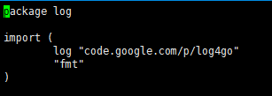
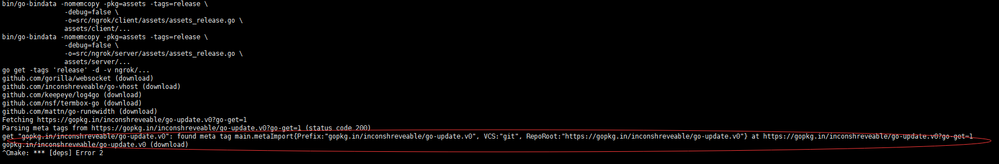
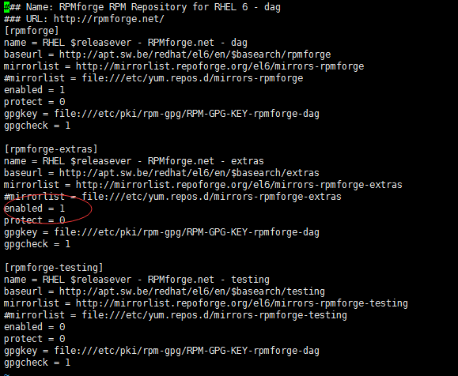
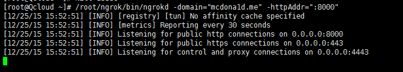
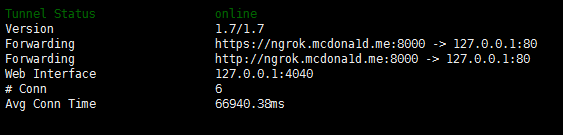

本文中依赖的主要环境
Server:CentOS 6.5 X64
Client:RaspberryPi ARM Debian 7
主域名:mcdona1d.me
ngrok子域名:ngrok.mcdona1d.me
首先安装必要的工具：
yum install -y openssl git mercurial bzr subversion
以下这套工具是Linux的开发工具套件，但此程序为Go语言编写，用的也是Go的编译器。我不知道有没有用，90%可能此次编译没用。但是我是早就装过了，所以如果出问题的话就装一下吧
yum groupinstall -y "Development tools"
服务端
获取 ngrok 源码
git clone https://github.com/inconshreveable/ngrok.git ngrok
cd ngrok
以下命令基本都在ngrok目录下执行
生成必要的证书文件
生成并替换源码里默认的证书，注意域名修改为你自己的。
之后编译出来的服务端客户端会基于这个证书来加密通讯，保证了安全性
export NGROK_DOMAIN="mcdona1d.me"
openssl genrsa -out base.key 2048
openssl req -new -x509 -nodes -key base.key -days 10000 -subj "/CN=$NGROK_DOMAIN" -out base.pem
openssl genrsa -out server.key 2048
openssl req -new -key server.key -subj "/CN=$NGROK_DOMAIN" -out server.csr
openssl x509 -req -in server.csr -CA base.pem -CAkey base.key -CAcreateserial -days 10000 -out server.crt
cp base.pem assets/client/tls/ngrokroot.crt
cp server.crt assets/server/tls/snakeoil.crt
cp server.key assets/server/tls/snakeoil.key
ngrok通过bindata将ngrok源码目录下的
assets目录（资源文件）打包到可执行文件(ngrokd和ngrok)中去，assets/client/tls和assets/server/tls下分别存放着用于ngrok和ngrokd的默认证书文件，我们需要将它们替换成我们自己生成的。因此这一步务必放在编译可执行文件之前
编译
配置编译环境
首先需要配置Go语言编译环境
从此网站下载Go语言源码http://www.golangtc.com/download
根据我的系统我使用的是go1.4.2.linux-amd64.tar.gz
将解压后的go文件夹转移到/usr/local/目录下
cd /root
wget http://www.golangtc.com/static/go/go1.4.2/go1.4.2.linux-amd64.tar.gz
tar -zxvf go1.4.2.linux-amd64.tar.gz
mv go/ /usr/local/
cd /root/ngrok/
然后将
cp /usr/local/go/bin/* /usr/bin/
如果提示覆盖，则摁y同意
设置编译变量
以下三条环境变量根据你的实际情况来设置
export GOOS="linux" GOARCH="amd64" GOPATH=/root/ngrok/
make release-server
如果一切正常而且你的服务器在国外，并且是CentOS7且最近yum update过的话，ngrok/bin目录下应该有ngrok、ngrokd两个可执行文件。但是一般不会那么正常~
首先程序编译会从GoogleCode下载log4go依赖，一般情况是不方便下载的。解决办法是
vi /root/ngrok/src/ngrok/log/logger.go

将第四行的log "code.google.com/p/log4go"换成这个
log "github.com/keepeye/log4go"
解决这个问题之后继续编译，程序可能会卡在这一步

仔细研究前辈的编译过程之后，得知这一步居然要求Git的版本！
此时我的Git版本为1.7.1，据说需要升级到1.7.9.5以上。
以下是我CentOS 6.5的升级方法
rpm --import http://apt.sw.be/RPM-GPG-KEY.dag.txt
rpm -i http://pkgs.repoforge.org/rpmforge-release/rpmforge-release-0.5.3-1.el6.rf.x86_64.rpm
vi /etc/yum.repos.d/rpmforge.repo
找到[rpmforge-extras]，把enabled=0改成enabled=1
 修改完成后
yum update git
升级完成后版本为1.7.12.4，继续执行编译，即可顺利编译完成
sudo make release-server
运行
/root/ngrok/bin/ngrokd -domain="mcdona1d.me" -httpAddr=":8000"

出现以上字样没有报错即为成功
配置开机自动运行
将以下代码粘贴入rc.local保存即可
vi /etc/rc.local
/root/ngrok/bin/ngrokd -domain="mcdona1d.me" -httpAddr=":8000" > /var/log/ngrok.log &
客户端
客户端根据实际情况编译，下面给出四种客户端的编译命令，具体X86或X86_64或arm根据自己情况更改
cd /usr/local/go/src
以下四条根据情况选择一条执行
GOOS=linux GOARCH=amd64 ./make.bash #Linux 64位
GOOS=darwin GOARCH=amd64 ./make.bash #MacOS 64位
GOOS=windows GOARCH=386 ./make.bash #Windows 32位
GOOS=linux GOARCH=arm ./make.bash #Linux ARM架构 适用于树莓派
等待执行完毕后回到ngrok目录
cd /root/ngrok
export GOOS="linux" GOARCH="arm" GOPATH=/root/ngrok/
make release-client
执行完毕后会在/root/ngrok/bin/linux_arm生成适用于arm架构的树莓派可用的客户端ngrok
将ngrok拷贝到client服务器中并chmod +x ngrok增加执行权限，并创建一个配置文件ngrok.cfg，内容如下：
server_addr: "mcdona1d.me:4443"
trust_host_root_certs: false
执行ngrok：
-subdomain=为你的二级域名 80为client需要映射到公网的端口
./ngrok -config=./ngrok.cfg -subdomain=ngrok 80
 online即为成功
需要最后提及的是，
ngrok会同时请求ngrok.mcdona1d.me和mcdona1d.me的解析，因为我两个域名解析地址不同，所以一直失败。但是我又不能把主域名更改解析地址，遂在host文件中手动添加一行解析地址，问题解决，内网透穿成功
参考
搭建自己的ngrok服务 搭建 ngrok 服务实现内网穿透 自行编译ngrok服务端客户端，替代花生壳，跨平台 自编译搭建ngrok服务实现内网穿透 搭建ngrok服务器实现内网穿透及映射 在CentOS上把Git从1.7.1升级到1.7.12.4
Disqus 留言
comments powered by Disqus